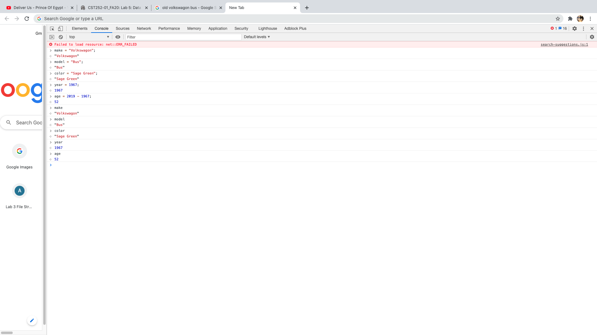
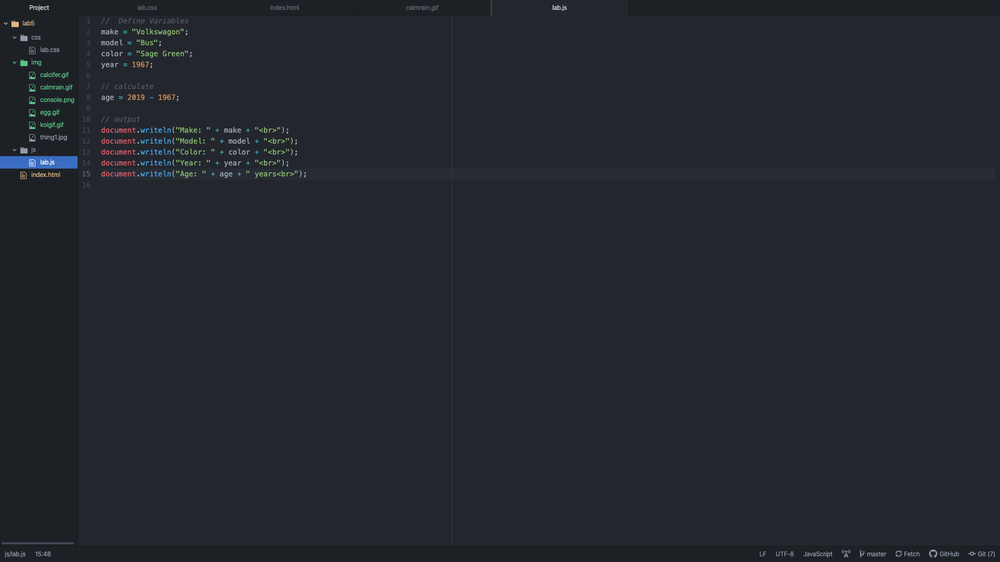

Lab 5: Data Types and Variables
In this lab we got a first look into what javascript can do by making different attributes of a car including its type, model, color, year, and age. It responded in an interactive way that now processed the new rules we made and automatically gave us the values that we entered in. My partner decided to go with a Sage Green 1967 Volkswagon Bus. I chose the car I currently drive, which is a 2007 Suzuki Forenza covered in anime stickers.
Challenges
The javascript in this lab was pretty easy to understand for both me and my partner. It was definitely intersting for us to see how javascript responded to our inputs of the characteristics of the car.
Results
Here is the list of characteristics for the car we chose, along with screenshots and captions for what we did.
Below is the first javascript task we coded in the console in the inspect tab.
This is the next step we coded, its the same coding as in the console, but its written out in Atom.
